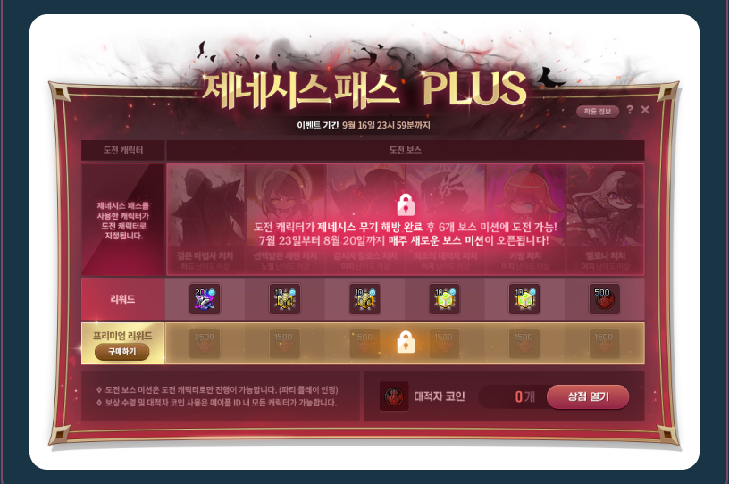

01 · 해방 전 성장 가속
제네시스 패스

- 가격
- 30,000 넥슨캐시
- 구매 조건
- 255레벨 이상 · 「운명의 결전 그 후」 완료, 「힘의 해방 두 번째」 미완료
- 핵심 혜택
- 보스 처치로 얻는 어둠의 흔적 3배 · 지정 보스 도전 지원
- 이용 조건
- 보스 처치·퀘스트 수행 필요. 구매만으로 해방되지 않음
본인 · 구매
해방 시간을 줄이기 위해 구매. 6/20 사용 기록과 7월 말쯤 해방했다는 본인 회상.
A · 게임 사업 PM · MAPLESTORY
공식 상품 구조와 실제 구매 경험을 바탕으로 성장 가속 상품과 후속 보상 상품의 구매 조건을 비교했습니다.
개인 구매 판단 기본 패스는 해방 가속을 위해 구매했습니다. PLUS는 후속 보스 부담과 큐브 결과의 불확실성 때문에 구매하지 않았습니다. 이 경험에서 검토한 사업 판단 ↓
01 · 해방 전 성장 가속
해방 시간을 줄이기 위해 구매. 6/20 사용 기록과 7월 말쯤 해방했다는 본인 회상.
02 · 해방 후 추가 보상

후속 보스를 클리어할 자신이 부족했고, 추가 코인으로 큐브를 사도 원하는 잠재 옵션을 얻지 못할 수 있어 구매하지 않음.
상품 조건: 공식 2026.06.18 업데이트 · 두 이미지는 지원자 제공 자료이며, PLUS 화면 자체를 본인의 미구매 증빙으로 간주하지 않습니다. 상세 판매·이용 기간은 아래 비교표에서 확인할 수 있습니다.
해방은 제네시스 무기 성장 목표다. 어둠의 흔적은 그 퀘스트에 필요한 진행 재화이며, 패스는 보스 처치나 퀘스트 수행을 대신하지 않는다.
| 비교 항목 | 기본 패스 | PLUS 일반 / 프리미엄 티켓 |
|---|---|---|
| 가격 공식 확인 | 30,000 넥슨 캐시 | 일반 미션 추가 티켓 불필요 / 유료 티켓 별도 30,000 캐시 |
| 구매·참여 자격 공식 확인 | 255레벨 이상, 「운명의 결전 그 후」 완료·「힘의 해방 두 번째」 미완료 | 기본 패스를 산 도전 캐릭터의 해방 완료. 미완료 캐릭터는 유료 티켓 구매 불가 |
| 핵심 혜택 공식 확인 | 보스 처치 흔적 3배·지정 도전 지원·해방 완료 소울 상자 | 보스 미션 일반 보상 / 티켓 활성화 후 유료 추가분 최대 10,000코인 |
| 혜택 이용 조건 공식 확인 | 재화는 보스 처치 필요. 완료 보상은 해방해야 수령 | 해방 후 개방된 보스 미션 완료 필요. 구매만으로 최대 보상을 주지 않음 |
| 판매·이용 기간 공식 확인 | 판매 06.18 점검 후~09.15 23:59 효과 ~09.16 23:59 | 티켓 판매 06.18 점검 후~09.16 23:50 효과·보상 수령 ~09.16 23:59 |
| 구매 장벽 분석 가설 | 처치 가능 보스·남은 획득 기회에 따라 활용 가치 차이 | 추가 가격·후속 보스 수행 능력·미션 개방 대기 |
기간은 모두 2026년 한국 시간. 두 유료 상품은 각각 명의당 1회, 넥슨 캐시만 사용 가능. 전체 조건·버프·보상은 부록에 보존했다. 공식 S1 · 2026.06.18

기록 확인: 화면에는 ‘제네시스 패스 30,000원’과 2026.06.20 사용일이 있다. 공식 가격의 넥슨 캐시 단위와 구분했다.
본인 진술: 해방 시간을 줄이려고 샀고, 7월 말쯤 해방했다. PLUS는 후속 보스 수행 부담도 있었고, 추가 코인으로 큐브를 사도 원하는 잠재 옵션 세 줄을 얻지 못할 수 있어 사지 않았다.
해석: 보상을 받을 수 있는지와, 받아도 원하는 성장이 될지를 따로 판단한 개인 사례다. 정확한 단축 일수나 다른 구매자의 동기는 이 기록으로 알 수 없다.
공식 S1·본인 사례를 재구성한 흐름이며, 전체 구매자의 실제 행동을 측정한 결과는 아니다.
| 구매 판단 | 가치가 높을 수 있는 조건 · 가설 | 활용이 제한될 수 있는 조건 · 가설 |
|---|---|---|
| 기본 패스 · 해방 목표의 가속 | 해방 목표가 있고 처치 가능한 보스에서 재화를 얻을 기회가 충분함 | 늦은 시작·제한된 보스 수행·남은 과제에 따라 같은 3배도 실제 단축 폭이 작을 수 있음 |
| PLUS · 해방 후 추가 보상 | 후속 보스를 수행할 수 있고 추가 코인을 필요한 성장에 사용할 수 있음 | 미션 수행 부담·짧은 남은 기회·원하는 옵션 획득의 불확실성 때문에 추가 가격을 선택하지 않을 수 있음 |
구조는 공식 조건, 동기는 개인 사례에서 출발한 검증 가설이다. 기존 구조의 활용·완료와 조건 이해가 확인되면 유지를 검토한다. 특정 집단의 조건 오인·미활용 원인이 확인될 때만 안내나 해당 조건의 변경을 검토하며, 낮은 구매율만으로 할인이나 보상 확대를 정하지 않는다.
공식 확인·계산 · 단위: 기본 획득량 대비 배수 · 적용: 2026.06.18~09.16 시즌 · 공식 S1 · 2026.06.18
추가분은 기본량의 2배(+200%)다. 해방 기간이나 실제 전투력이 3배 달라진다는 그래프가 아니다.
미완료·오인의 실제 규모는 아직 모른다. 가격·보상은 먼저 유지 검토하고, 아래 두 조치를 조건부로 판단한다. 위험과 기대 효과는 모두 가설이다.
KPI는 판단에 필요한 지표다. 아래는 실측 결과가 아닌 측정 계획이며, 명의당 1회 판매 제한에 맞춰 분자·분모를 모두 명의 단위로 통일했다.
| 우선 지표 | 분자 / 분모 | 집계 기준·해석 |
|---|---|---|
| 기본 패스 구매율 | 자격 진입 후 판매 마감까지 유효 구매한 명의 / 판매 시작 기존 자격자와 판매 중 신규 자격자의 합집합 | 2026.06.18 점검 후~09.15 23:59. 모두 구매 전 자격을 확인하고 동일 명의로 중복 제거. 자격 진입 주차·남은 구매 시간 병기 |
| 구매자 해방 완료율 | 09.16 23:59까지 패스 사용 캐릭터가 해방한 구매 명의 / 전체 유효 기본 패스 구매 명의 | 구매·사용·완료를 구분. 미사용·진행 중도 분모에 포함. 구매 주차·시작 단계·이용 기회별 구분 |
| PLUS 유료 티켓 구매율 | 티켓 자격 진입 후 마감까지 유효 구매한 명의 / 판매 마감 전 패스 적용 캐릭터가 해방해 티켓 구매 자격을 얻은 유효 기본 구매 명의 | 티켓 판매 마감 2026.09.16 23:50, 효과·수령 23:59. 일반 미션 참여와 티켓 구매를 구분. 자격 진입 주차·남은 구매 시간 병기 |
구매율의 단위는 익명화한 명의 키다. 기본 패스 사용 캐릭터·PLUS 도전 캐릭터를 같은 명의의 거래와 연결한다. 구매 승인·상품 사용·해방은 다른 시각이다.
• 기본 모집단: 판매 시작에 이미 자격 캐릭터를 가진 미구매 명의와, 판매 중 처음 자격을 얻은 미구매 명의의 합집합이다. 여러 캐릭터·계정이 있어도 한 번 센다.
• 자격 진입일: 기존 자격자는 판매 시작일, 이후 자격자는 첫 자격 발생일이다. 각 명의의 남은 구매 가능 시간은 해당 상품 판매 마감에서 진입 시각을 뺀 값이다. 자격 상실·재취득도 기록한다.
• PLUS 모집단: 기본 패스 사용 캐릭터가 해방하고 티켓 판매가 가능한 상태에 진입한 명의다. 판매 시작 전부터 조건을 충족했다면 판매 시작으로 맞춘다. 기본 패스 구매·사용·해방 시각을 따로 연결한다.
• 분자: 같은 모집단 안에서 자격 진입 이후 해당 판매 기간에 유효 구매가 승인된 명의다. 취소·전액 철회 거래는 별도로 대조하고, 구매자가 자격 기록과 연결되지 않으면 집계를 보류한다.
• 비교: 자격 발생 주차와 남은 구매 가능 시간을 함께 나눈다. 보조 24시간 구매율은 진입 시점에 마감까지 24시간 이상 남은 집단만 대상으로 진입 후 24시간 내 구매를 센다. 늦게 진입한 명의를 전체 시즌 비율에서 숨기거나, 구매했는지에 따라 보조 지표의 분모를 바꾸지 않는다.
동일 명의의 계정·캐릭터를 중복 세지 않고 패스 적용 캐릭터와 연결해야 한다. 익명화한 연결 자료가 없다면 이 비율은 계산하지 않는다. 후반 구매자의 짧은 이용 기회도 따로 본다.
보조 진단은 단계 진행을 설명하기 위한 계획이며 게임 이탈률이 아니다. 구매·사용·단계 진입·완료·접속 기록을 따로 연결한다. 적용 시 이미 진행 중인 단계는 패스 적용 시각부터, 이후 단계는 실제 진입 시각부터 관찰한다. 진입 당시 보유 흔적도 나눠 본다.
| 진단 | 분자·분모·기간 | 해석·제외 기준 |
|---|---|---|
| 단계별 완료 | 단계 s 진입 후 효과 종료(2026.09.16 23:59)까지 그 단계를 완료한 구매 명의 / 패스 적용 캐릭터가 그 단계에 진입한 유효 구매 명의 | 진입 주차·남은 시간·시작 스펙을 구분. 해당 단계에 미진입한 명의는 그 분모에 넣지 않고 별도 표시. 미사용 구매자도 따로 표시 |
| 7일간 진행 변화 없음 | 단계 진입 후 168시간 동안 단계 완료·전환과 흔적 획득이 모두 없는 명의 / 같은 168시간을 끝까지 관찰할 수 있는 단계 진입 명의 | 미실행 진단 표식이다. 만료로 관찰이 잘린 집단은 별도 보고. 월간 대기·보스 실패·쉬는 기간도 포함될 수 있어 중단·이탈 확정이 아님 |
| 같은 기간의 접속 상태 | 위 진단 집단에서 같은 168시간의 접속 유무를 별도 표시 | 접속은 계속하지만 해방을 미루는 경우와 미접속을 분리. 단계 완료율과 접속 잔존율을 같은 지표로 쓰지 않음 |
다른 큐브·BM 구매는 별도 탐색 자료다. 시작 스펙·시기·기존 지출 등이 달라 패스가 후속 소비를 늘렸다는 인과 효과로 사용하지 않는다. PLUS 구매율은 해방으로 티켓 자격을 얻은 기본 구매자만의 후속 구매를 보는 핵심 지표로 유지한다.
보스별 보상, 계산 사례, 전체 지표·실험, 협업·위험 검토를 아래에서 확인할 수 있다. 2024년 수치를 2026년 실측으로 사용하지 않는다.
분석 대상: 2026년 여름 제네시스 패스. 자료 확인일: 2026.10.25. 종료된 시즌을 돌아본 공개자료 분석이며, 현재 판매 상품을 추천하는 글이 아니다. 실제 운영·실험 성과는 없다.
제네시스 패스는 이미 해방을 목표로 하는 이용자에게, 보스 처치로 얻는 진행 재화를 늘리고 일부 도전을 지원하는 상품이다. 구매 가치는 ‘보상이 많다’보다 ‘내가 할 수 있는 보스와 남은 기간 안에서 목표에 얼마나 가까워지는가’에 달려 있다고 해석했다. 이 해석은 모든 구매자의 동기를 확인한 결과가 아니다.
‘유저는 왜 구매하는가’를 상품 조건, 본인의 구매 기록, 다른 이용자에게 가능한 동기 가설로 나눴다. 회사의 매출 의도나 전체 이용자 심리를 확인했다고 주장하지 않는다.
| 근거 | 직접 확인한 내용 | 사용할 수 없는 결론 |
|---|---|---|
| S1 공식 2026.06.18 본 서버 이벤트 공지 | 가격·대상·효과·종료일·PLUS 미션 및 보상 | 실제 구매율·완료율·잔존 효과 |
| S2 공식 2024.12.19 시스템 개편 공지 | 어둠의 흔적과 해방 퀘스트의 관계, 당시 보스별 지급표·인원 분배 | 이후 모든 시즌의 보유 한도·규칙이 동일하다는 주장 |
| P1 실제 2026.06.20 상품 사용 화면 | 제네시스 패스 30,000원 사용 내역. 결제 승인 시각은 미확인 | 정확한 효과 이용량·완료 시점 |
| P2 지원자 회상 | 시간 단축을 위해 구매, 2026년 7월 말쯤 해방 완료, 보스 수행 부담과 원하는 잠재 옵션을 얻지 못할 가능성을 고려해 PLUS 유료 티켓 미구매 | 패스만의 기여·전체 구매자 행동 |
해방은 제네시스 무기를 성장시키는 목표다. 어둠의 흔적은 관련 퀘스트 진행에 필요한 재화다. 따라서 획득량 증가는 목표 진행을 돕지만, 개별 도전 수행이나 보스 처치 자체를 대신하지 않는다. [S1·S2]
| 항목 | 제네시스 패스 | 제네시스 패스 PLUS / 유료 티켓 |
|---|---|---|
| 상품·참여 구조 | 해방 진행 가속 상품 | 기본 패스 구매 후 해방 완료 캐릭터의 후속 미션 / 추가 유료 보상 |
| 가격 | 30,000 넥슨 캐시 | 일반 미션은 별도 티켓 없이 참여, 프리미엄 티켓 30,000 캐시 |
| 대상 | 255레벨 이상, ‘운명의 결전 그 후’ 완료, ‘힘의 해방 두 번째’ 미완료 | 기본 패스 구매 캐릭터의 해방 완료 필요, 미완료 시 유료 티켓 구매 불가 |
| 판매 기간 | 2026.06.18 점검 후~09.15 23:59 | 유료 티켓 2026.06.18 점검 후~09.16 23:50 |
| 효과·수령 종료 | 2026.09.16 23:59 | 2026.09.16 23:59, 구매일부터 새 기간을 주는 방식 아님 |
| 결제 조건 | 명의당 1회, 메이플포인트·마일리지 사용 불가 | 유료 티켓도 명의당 1회, 같은 결제 제한 |
| 구매 주의 | 공지상 교환·청약철회 불가, 적용 캐릭터 삭제 후 재구매 불가 | 공지상 교환·청약철회 불가, 종료일까지 티켓 사용 필요 |
출처: S1. 공지의 상품 조건을 정리한 것이며 법적 권리 일반에 관한 해석은 아니다. 넥슨 캐시 가격과 영수증의 원화 금액은 구분한다.
| 가치 요소 | 해당 패스 미구매 | 기본 패스 구매 후 | 가치와 제약 |
|---|---|---|---|
| 어둠의 흔적 | 기본 획득량 | 보스 처치 획득량 3배 | 같은 획득 기회의 추가분은 기본량의 2배. 전체 해방 시간이 3분의 1이라는 뜻은 아님 |
| 해방 퀘스트 파티 | 기본 퀘스트 규칙 | 패스 이용자끼리 스우~진 힐라 최대 6인 | 2인 이상 최종 데미지 50% 감소, 스우는 60% 감소. 무조건 쉬운 완료 보장은 아님 |
| 전투 지원 | 해당 패스 버프 없음 | 해방 전 지정 보스 도전 시 공격력/마력·올스탯 각 20, 보스 데미지·방어율 무시 각 10%, HP/MP 각 1,000 | 표기 수치를 실제 최종 피해량 증가율로 합산하지 않음 |
| 완료 보상 | 해당 패스 보상 없음 | 해방 완료 시 공격력/마력 3% 확정 옵션의 위대한 군단장 소울 상자 | 추가 획득 동기가 될 수 있으나 현금 가치 환산은 미실시 |
| 구매 주간 소급 | 해당 없음 | 이미 획득한 흔적의 교환권 소급, 지급 후 7일 사용 | 이전 모든 주간이 소급되는 것으로 설명하지 않음 |
| 해방 후 | 해당 PLUS 참여 자격 미충족 | PLUS 일반 미션 참여 가능 | 추가 프리미엄 보상은 별도 구매와 미션 달성 필요 |
출처: S1. 공격력·방어율 무시 등의 효과는 캐릭터 상태에 따라 체감이 달라지므로 전투력 상승률을 만들지 않았다.
첫 계산은 진행 재화 획득의 차이다. S2의 2024년 지급표에서 하드 스우 1인 기준 입력값 50개를 가져와, S1의 3배 조건을 적용하면 150개, 추가분은 100개다. 이는 공식 입력값을 조합한 규칙 이해용 시나리오이며 2026년 특정 계정의 실제 지급량 재현은 아니다. 파티 분배·다른 시기 변경·보유 한도·퀘스트 진행과 처치 가능 여부는 별도다.
| 계산 대상 | 입력·계산 | 결과 | 의미 |
|---|---|---|---|
| 같은 재화 획득 기회의 가속 | 기본량 × 3 | 기본량 대비 +200% | +300%가 아니라 총 300% |
| 규칙 이해용 보스 사례 | 당시 50개 × 3 | 150개, 추가 100개 | 역사적 지급표 기반 조건부 시나리오 |
| 기본 패스와 PLUS 유료 티켓 합계 | 30,000 + 30,000 | 60,000 넥슨 캐시 | 두 단계 모두 구매할 때, 일괄 필수 가격 아님 |
| PLUS 프리미엄 미션 전부 완료 | 2,500 + 1,500 × 5 | 추가 10,000 코인 | 일반 보상의 500코인과 별도 |
| 첫 미션과 이후 두 미션 완료 | 2,500 + 1,500 × 2 | 추가 5,500 코인 | 전부 완료의 55%, 실제 달성률 통계 아님 |
| 미션을 하나도 완료하지 못함 | 0개 미션 달성 | 해당 미션 추가 보상 0코인 | 구매만으로 10,000코인 지급되지 않음 |
PLUS 보상은 다음과 같다. 날짜는 미션 개방일이며 모든 이용자가 그날 처치했다는 뜻이 아니다. [S1]
| 개방 시점 | 처치 조건 | 일반 보상 | 티켓 추가 보상 |
|---|---|---|---|
| 해방 완료 직후 | 하드 이상 검은 마법사 | 심연의 환생의 불꽃 20개 | 2,500코인 |
| 2026.07.23 | 노멀 이상 세렌 | 블랙 큐브 10개 | 1,500코인 |
| 2026.07.30 | 이지 이상 칼로스 | 블랙 큐브 10개 | 1,500코인 |
| 2026.08.06 | 이지 이상 최초의 대적자 | 화이트 에디셔널 큐브 10개 | 1,500코인 |
| 2026.08.13 | 이지 이상 카링 | 화이트 에디셔널 큐브 10개 | 1,500코인 |
| 2026.08.20 | 이지 이상 벨로나 | 500코인 | 1,500코인 |
표의 불꽃·큐브는 공지의 ‘대적자의’ 보상이다. 파티 처치는 인정되지만 연습모드는 인정되지 않는다. 해방 완료 주간/월간에 이미 개방된 해당 보스를 처치했다면 자동 완료된다는 추가 안내도 있다. 수령은 9/16 23:59까지이며, 코인샵은 해방 완료한 메이플ID 내 캐릭터만 이용할 수 있다. [S1]
해석: 빠른 해방은 PLUS 자격을 앞당기지만 7/23~8/20의 개방 대기까지 없애지 않는다. 코인 사용처는 성장 아이템이지만 품목별 가격과 이용자의 실제 필요량을 확보하지 않아 ‘몇 원 이득’이나 ‘가성비 몇 배’는 계산하지 않았다. 주간·월간 초기화, 실제 처치와 해방 단계 기록이 없으므로 개인의 절약 일수도 산출하지 않았다.
| 효용 | 확인 가능한 범위 | 이번 판단 |
|---|---|---|
| 진행 재화 | 2026 공식 공지는 보스 처치 획득량 3배를 명시. 보스별 지급·요구량 표는 2024 개편 자료 | 기존 배수·코인 계산만 유지. 과거의 8개월 구조나 2024 수치를 2026 비구매 완료 기간으로 사용하지 않음 |
| 도전 지원 | 패스 파티 조건·페널티·버프는 2026 공지로 확인 | 처치 성공률·체감 피해량으로 환산하지 않음 |
| 개인 목표 달성 | 6/20 사용 기록·7월 말쯤 해방 회상 | 당시 단계·보유 흔적·주간/월간 처치 시각·파티 인원·분배·규칙 적용 이력이 미확보. 같은 시작 조건의 적용/미적용 완료일을 계산하지 않음 |
시뮬레이션에는 각 시점의 단계·잔여 요구량·보유 한도·보스별 지급·초기화/처치 제한·분배·패스 적용 시점과 종료를 함께 확인해야 한다. 두 지정 공지만으로 그 기록과 2026 시즌 전체 규칙 이력을 복원하지 못했다. 30,000캐시는 가격이며 메소 시세나 확정된 절약 시간의 가치로 바꾸지 않았다. 새 그래프는 추가하지 않았다.
구매 흐름: 해방 목표 보유 → 자격 확인 → 실제 보스 도전 가능 여부 → 남은 기간의 가속 가치 판단 → 기본 패스 구매 → 해방 → 후속 보스 수행 가능성 확인 → 코인·큐브 보상을 원하는 성장으로 연결할 수 있을지 판단 → PLUS 유료 보상 별도 판단.
| 대상·동기 | 상품과 연결되는 근거 | 반대 해석·구매 장벽 | 근거 수준 |
|---|---|---|---|
| 목표 도달을 앞당기려는 이용자 | 어둠의 흔적 3배 | 플레이 가능 시간이 부족하거나 보스를 못 잡으면 가치를 쓰기 어려움 | 지원자 동기는 자기 보고, 타인에게는 가설 |
| 혼자 퀘스트가 어려운 이용자 | 최대 6인 도전·지정 보스 버프 | 파티원도 패스 필요, 데미지 페널티·장비·숙련 제한 | 구조는 사실, 구매 동기는 가설 |
| 완료 보상을 원하는 이용자 | 3% 옵션 소울 상자 | 이미 필요한 보상을 갖췄거나 우선순위가 낮을 수 있음 | 보상은 사실, 선호는 가설 |
| 해방 후 보스를 도전할 이용자 | PLUS의 보스 미션과 추가 코인 | 별도 30,000 캐시·미션 개방·보스 난도·사용 조건 | 구조는 사실, 추가 구매 동기는 가설 |
| 시즌 후반 구매 고려자 | 모든 구매자의 공통 효과 종료 | 남은 기회가 적어 같은 가격의 활용 가치가 낮을 가능성 | 종료 조건은 사실, 부담은 가설 |
지원자 사례: 6/20 기본 패스 사용 기록 → 시간 단축 의도 → 7월 말쯤 해방 완료 → 후속 보스 수행 부담과 큐브 사용 결과의 불확실성 때문에 PLUS 프리미엄 티켓은 미구매. 기본 패스의 가속 가치는 구매로 이어졌지만, 후속 상품은 보상 활용 가능성이 구매 장벽으로 작용한 개인 사례다. 추가 코인으로 대적자의 큐브를 사더라도 원하는 유효 잠재 옵션 세 줄이 나오지 않을 수 있어 추가 지출의 가치를 낮게 봤다는 설명을 덧붙였다. 커뮤니티의 실패 사례를 접했다는 회상은 성공 확률이나 전체 이용자 통계로 사용하지 않는다. 가격만이 주된 이유였다고 해석하거나 다른 이용자도 같은 이유로 미구매했다고 일반화하지 않는다. 미구매는 본인 진술이며 정확한 보스별 달성 이력은 확보하지 않았다. 장비 성장·다른 이벤트·파티 도움과 분리해 패스만의 인과 효과를 증명한 사례는 아니다. 다른 구매자가 똑같은 이유로 결제한다고 일반화하지 않는다.
| 검토할 위험 | 왜 가능한가 | 아직 모르는 것 | 확인할 자료 |
|---|---|---|---|
| 가격 부담·과금 피로 | 기본과 프리미엄 티켓은 별도 30,000 캐시 | 부담을 느끼는 대상 규모·적정 가격 | 자격별 미구매 이유·가격 관련 문의·동일 기간 다른 상품 구매 |
| 구매 후 미완료 | 보스·퀘스트 수행과 공통 만료가 필요 | 실제 미완료율과 원인 | 구매 주차별 진행·처치·완료·문의 |
| 구매자·비구매자 격차 체감 | 같은 획득 기회에 재화량 차이 | 이것이 실제 불만·이탈로 이어지는지 | 시작 스펙·퀘스트 단계·파티 규모별 행동과 VOC |
| 가속 후 목표 소진 | 해방을 앞당겨도 후속 보스에 흥미가 없을 수 있음 | 해방 후 목표 공백 존재·규모 | 해방 후 7일 보스 도전·활동·자발적 응답 |
| 기다림에 대한 기대 불일치 | PLUS 미션은 순차 개방 | 실제 오인 문의·불만 발생 여부 | 구매 시점·개방 조건 관련 문의 |
모두 위험 가설이다. 직업·스펙·친구·기존 해방 목표 등 차이 때문에 구매자와 비구매자의 활동 차이를 상품 효과로 바로 해석하지 않는다.
1. 구매 전 조건 안내
2. 진행·보상 조건 변경은 원인 확인 뒤
실제 내부 결과가 아닌 측정 계획이다.
모집단·명의·진입일 정의는 본문 05의 집계 기준에 모았다.
핵심 세 KPI의 분자·분모·기간은 본문 05에 모았다.
단계별 진행 진단의 전체 정의는 본문 05의 같은 이름 접기에서 확인할 수 있다.
보조 안전 지표는 구매 후 7일 관찰을 마친 명의 중 조건 오인 문의가 있는 명의 비율이다. 문의하지 않았다고 이해했다고 단정하지 않는다.
안내 실험은 자격 명의를 기존 안내·새 안내로 무작위 배정하고 가격·기간·혜택·동시 이벤트를 같게 둔다. 1차 확인은 조건 이해 과업과 오인 문의, 보조 지표는 배정 명의 대비 구매율이다. 구매자만 골라 비교하면 구매 자체가 만든 집단 차이가 섞이므로, 전환과 구매 후 행동의 해석을 분리한다. 명의 내 여러 계정에는 같은 안내를 유지한다. 개인정보 원문 대신 권한이 통제된 익명 연결 키를 쓰며, 연결이 불가능하면 명의 단위 실험을 보류한다.
시작 단계·스펙·진입 주차가 다른 집단을 단순 비교하지 않는다. 전체 서비스의 PUR·ARPU·ARPPU는 이 과제의 조건 이해·목표 달성을 직접 설명하지 않아 1차 지표에서 제외했다.
면접에서 설명할 핵심: ‘저는 해방을 앞당기고 싶어 구매했고 7월 말쯤 완료했습니다. 공식 규칙에서는 흔적이 3배지만, 제 완료 기간이 3분의 1이 됐다고 증명할 수는 없습니다. 저는 후속 보스 수행 부담이 있었고, 추가 코인으로 큐브를 써도 원하는 옵션을 못 얻을 수 있어 PLUS 프리미엄 티켓은 사지 않았습니다. 따라서 기본 패스를 샀다는 이유만으로 다음 상품도 구매한다고 보지 않았습니다.’
이 설명을 지원자가 자신의 말로 이해했는지는 별도 확인이 필요하다. 문서 작성 완료와 지원자의 학습 완료, 실제 운영 성과는 구분한다.
공식 자료 재열람: 2026.10.25. 2024년 보유 한도 등 다른 시기 조건을 2026년 상품에 그대로 적용하지 않았다. AI가 조사·계산·문서화를 보조했으며 지원자가 수행한 운영·실험으로 표시하지 않는다.
아래 9월 모멘텀 구매는 제네시스 패스·PLUS와 다른 상품이다.

전체 분석 원문 내려받기 · 현재 보고서 PDF 내려받기
실제 회사에서 관측한 결과가 아니다. 높음·낮음은 같은 정의·명의 단위와 유사한 자격 진입 주차·시작 단계·남은 기간을 맞춘 비교 기준 대비다. 비교 기준·충분한 관찰·표본이 없으면 판정을 보류한다.
| 모의 신호 | 먼저 확인할 것 | 검토할 대응·보류 |
|---|---|---|
| 기본 구매율 낮음 | 상품 노출·조건 이해, 처치 가능 보스, 남은 기간, 가격 관련 문의 | 안내를 이해하지 못한 근거가 있으면 구매 전 요약을 시험. 가격이 원인이라는 근거 없이 할인부터 하지 않음 |
| 기본 구매율 높음 | 구매 주차별 완료·미적용·조건 오인 문의를 함께 확인 | 완료와 활용도 양호하면 유지 검토. 미완료·오인 문의가 함께 늘면 추가 판촉보다 원인 확인 우선 |
| 해방 완료율 낮음 | 시작 퀘스트 단계·보스 수행·후반 구매·패스 미적용 여부 | 미적용·조건 오안내가 확인되면 해당 안내부터 수정. 재화 부족이 원인인지 확인 전 보상 증액 보류 |
| 해방 완료율 높음 | 해방 후 PLUS 자격 발생 시점·남은 기회·후속 참여 | 빠른 완료만으로 과도한 가속이라 판단하지 않음. 목표 공백·정보 탐색 문제가 확인될 때 기존 후속 미션 안내 검토 |
| PLUS 구매율 낮음 | 해방 시점·보스 처치 가능성·남은 기회·큐브 보상 활용과 가격 관련 문의 | 활용 기회가 부족하면 조건을 명확히 설명하고 구매 압박은 보류. 낮은 비율만으로 할인·보상 확대를 정하지 않음 |
| PLUS 구매율 높음 | 구매자의 미션 완료·보상 수령과 조건 오인 문의 | 보상 활용과 안내 이해가 확인되면 유지 검토. 미수령·오인이 함께 나타나면 추가 판촉보다 처리·안내 확인 우선 |
근거: 공식 S1 상품 구조와 05의 KPI 정의. 단위: 명의별 비율. 적용: 2026년 여름 상품의 판매·효과 기간(05 참조). 개인 사례를 전체 원인으로 일반화하지 않으며, 운영 효과는 미측정이다.